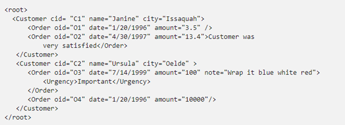
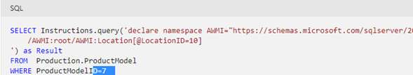

2.3 Consultando datos con XPath, XQuery, y SQL/MXL
Hecho por: Ricardo Martinez Franco
2.3 Consultando datos con XPath, XQuery, y SQL/MXL
Una consulta XPath (Lenguaje de rutas XML) puede especificarse como parte de una dirección URL o dentro de una plantilla. El esquema de asignación determina la estructura de este fragmento resultante y los valores se recuperan de la base de datos. Este proceso es conceptualmente similar a crear vistas utilizando la instrucción CREATE VIEW y escribir consultas SQL en ellas.
Un documento XML consta de nodos, como un nodo de elemento, un nodo de atributo, un nodo de texto, etc. Por ejemplo, fíjese en este documento XML:

En este documento, "Customer" es un nodo de elemento, cid es un nodo de atributo y "Importante" es un nodo de texto.
XPath es un lenguaje de navegación de grafos que se usa para seleccionar un conjunto de nodos de un documento XML. Cada operador XPath selecciona un conjunto de nodos basándose en un conjunto de nodos seleccionado por un operador XPath anterior.
Xquery
XQuery es un lenguaje que permite realizar consultas en datos XML estructurados o semi-estructurados. Con la compatibilidad de tipo de datos xml proporcionada en, los documentos se pueden almacenar en una base de datos y, a continuación, Motor de base de datos consultarse mediante XQuery.
XQuery se basa en el lenguaje para consultas XPath existente, con un incremento de la compatibilidad para lograr una mejor iteración, mejores resultados de la ordenación y la posibilidad de generar el XML necesario. XQuery opera según el modelo de datos XQuery. Se trata de una abstracción de documentos XML, y los resultados de XQuery pueden tener tipo o no tenerlo. La información del tipo se basa en los tipos proporcionados por el lenguaje para esquemas XML del W3C. Si no se dispone de información de tipos, XQuery trata los datos como sin tipo. Esto es similar al modo en que XPath versión 1.0 trata el XML.
Para consultar una instancia XML almacenada en una variable o columna de tipo xml, use los métodos de tipo de datos xml. Por ejemplo, puede declarar una variable de tipo xml y consultarla mediante el método query() del tipo de datos xml.
En el ejemplo siguiente, la consulta se especifica en la columna Instructions de tipo xml de la tabla ProductModel de la base de datos AdventureWorks.

XQuery incluye la declaración de espacio de nombres declare namespace``AWMI=... ,y la expresión de consulta, /AWMI:root/AWMI:Location[@LocationID=10] .
Tenga en cuenta que XQuery se especifica en la columna Instructions de tipo xml. El método query() del tipo de datos xml se usa para especificar XQuery.
La siguiente tabla enumera los temas relacionados que pueden ayudar a comprender la implementación de XQuery en Motor de base de datos.
Bibliografia:
(2015). Recuperado el 28/09/2021, de Tópicos avanzados de bases de datos: https://slideplayer.es/slide/3421979/
Documenacion SQL. (2019). Obtenido de https://docs.microsoft.com/es-es/sql/xquery/xquery-language-reference-sql-server?view=sql-server-ver15
Ricardo, C. M. (2009). Bases de datos. En C. M. Ricardo, Bases de datos. Mexico: Ricardo Alejandro del Bosque Alayón.